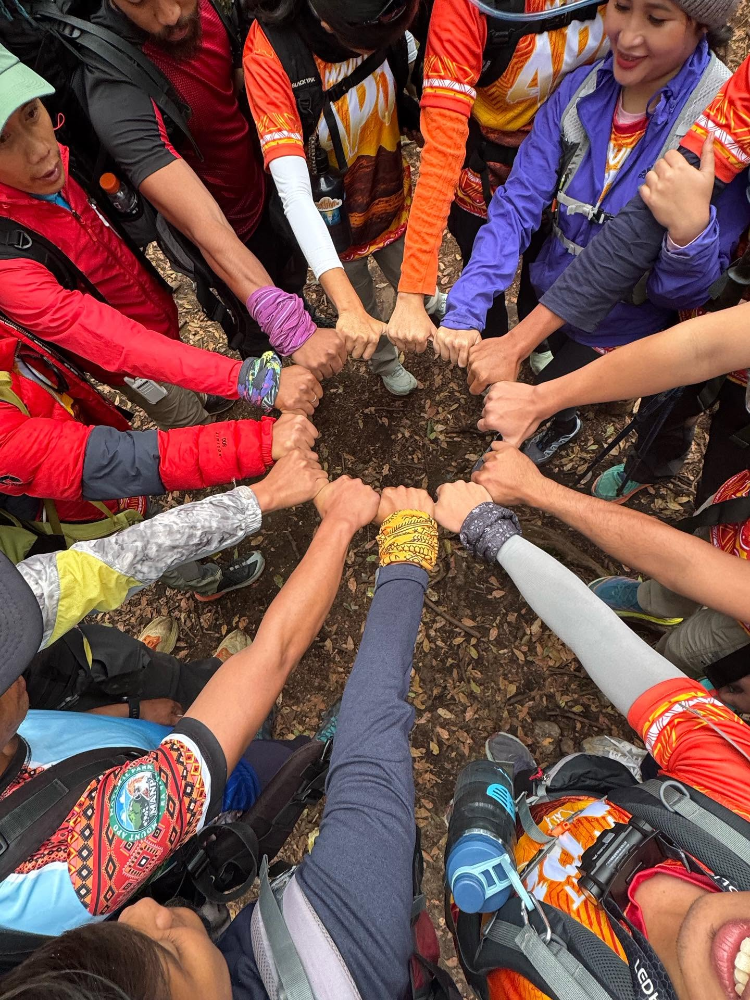
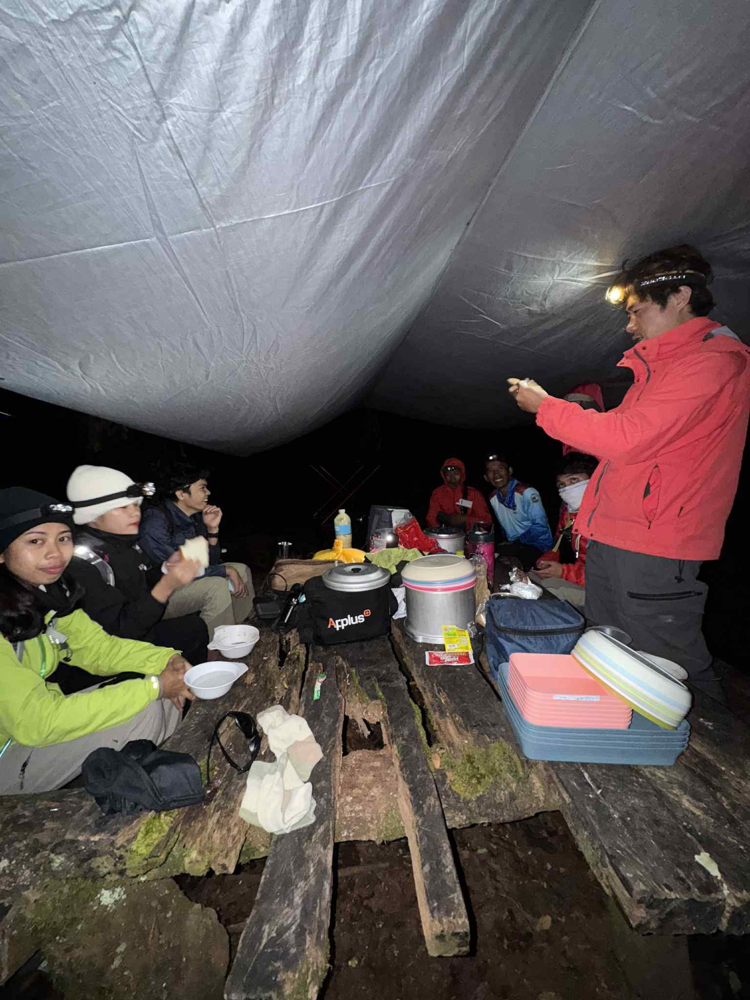

In July 2026, botanists and conservationists in the Philippines celebrated a quiet but meaningful event: the rediscovery of Ophiorrhiza biflora, a rare endemic flower, in the Mount Apo Natural Park. After 122 years without confirmed documentation, this small member of the Rubiaceae family was found once again on the slopes of the country's highest peak.

A Flower First Pressed in 1904
The plant was first collected on Mount Apo in October 1904 by the American botanist Edwin Bingham Copeland. For more than a century afterward, it remained largely absent from scientific records in the area, known only through that early collection and a few scattered sightings in Benguet and Negros. Its reappearance in 2026 confirmed that the species still survives within the protected park.
It is easy to say a plant was "gone." The truer picture is that it was simply unwatched — rooted, flowering, and alive in a forest that few people search leaf by leaf. Absence, in conservation, is often not the absence of a thing but the absence of attention.
A flower thought unseen for 122 years was, in the end, still there.
Found During Ordinary Fieldwork
Fittingly, the rediscovery came not through a dedicated search but through everyday conservation work. A team from the Protected Area Management Office (PAMO) encountered the plant while retrieving camera traps along a forest trail during routine wildlife monitoring. What began as ordinary fieldwork became a milestone in Philippine botany, as the team recorded the first successful photographic documentation of the species.

That detail matters. It is a reminder that discoveries are rarely the product of a single dramatic expedition. They are the by-product of showing up — season after season, trail after trail — to watch a mountain closely.
A Quiet Member of the Coffee Family
Ophiorrhiza biflora belongs to the Rubiaceae family, which also includes familiar plants such as coffee, gardenia, mussaenda, and santan. As a Philippine endemic, it is found nowhere else in the world, making its continued survival a matter of both scientific and national importance.
Field Card
- Species
- Ophiorrhiza biflora
- Family
- Rubiaceae (coffee family)
- Status
- Philippine endemic · rare
- First collected
- Mount Apo, October 1904 (E. B. Copeland)
- Rediscovered
- Mount Apo Natural Park, July 2026
- Gap
- 122 years · first-ever photo record
- Also recorded
- Benguet, Negros

What the Rediscovery Asks of Us
The rediscovery carries a simple but powerful message. It reminds us that protected areas like Mount Apo hold biodiversity we have not yet fully accounted for, and that patient, consistent monitoring is essential to understanding and safeguarding it.
If a species can hide in plain sight for 122 years within a protected park, then the line between lost and found is thinner — and more dependent on our vigilance — than we like to admit. To rediscover is also to be reminded: what we do not watch, we may one day mourn as gone, when in truth it was only waiting.
← Back to Dashboard